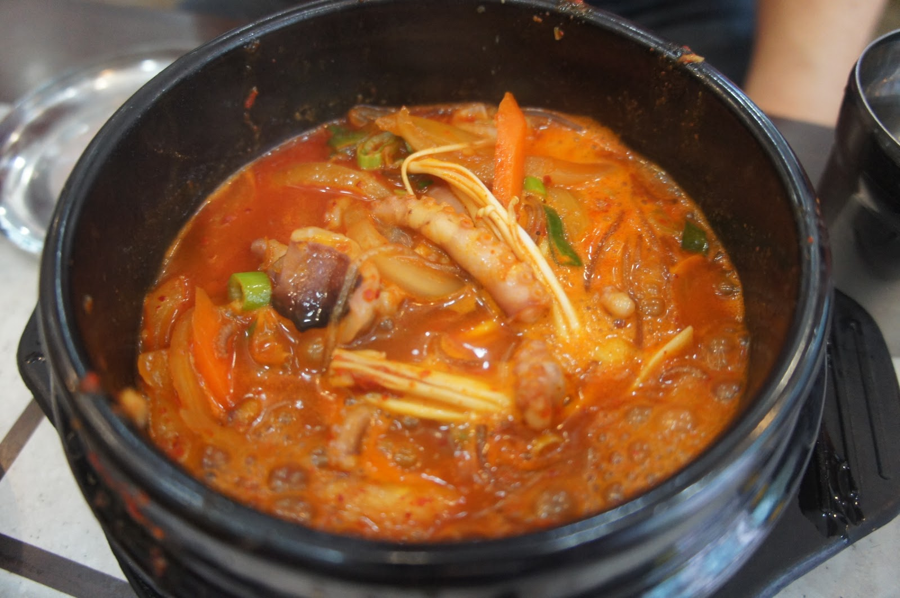
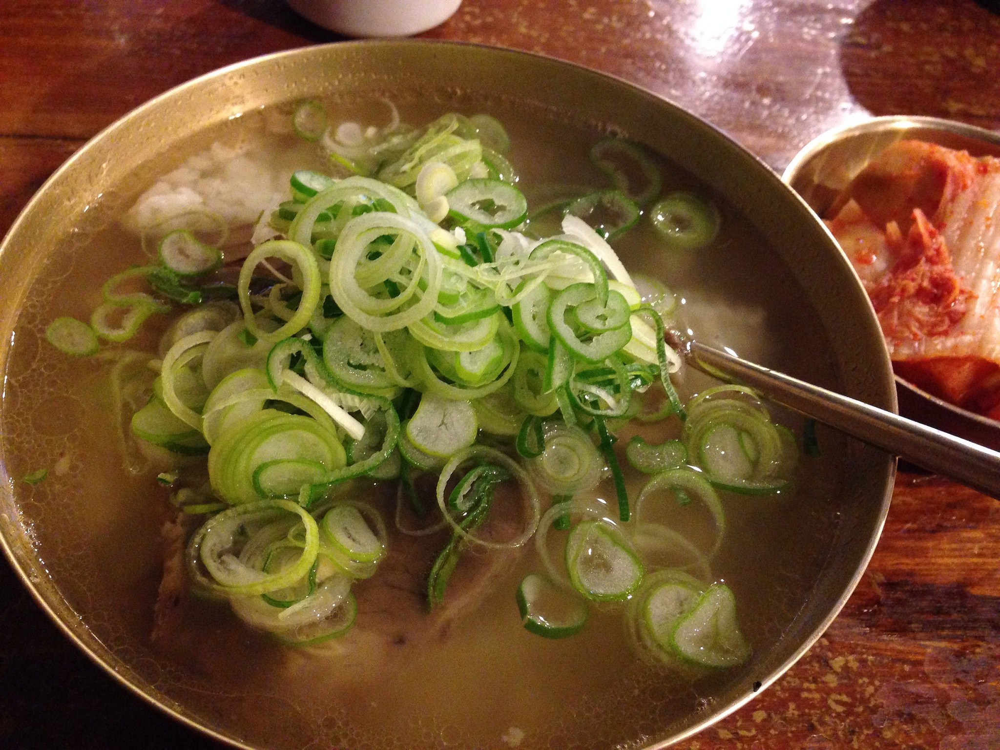

Hola bienvenidos al menu de platillos de Corea del norte.
Platillo |
Imagen |
Informacion |
| 1-Malgeunguk. |
 |
Son sazonadas con ganjang. Pequeñas cantidades de carne hervida pueden ser agregadas a la sopa, o mariscos ya sea frescos o deshidratados, los vegetales pueden ser el componente principal del consomé. |
|
2-Tojangguk.
|
son sazonadas con doenjang' Los ingredientes comunes para el tojang guk incluyen mariscos como almejas, anchoas deshidratadas, y camarón. Para preparar una sopa picante se agrega gochujang. |
|
|
3-Gomguk.
|
 |
estas sopas son hechas e huesos de res hervidos o cartílago. Se originaron como platillos de campesinos, todas las partes de la res se utilizan, incluyendo la cola, los huesos de las patas y las costillas con o sin carne; estos son hervidos en agua para extraer la grasa, médula y tejido gelatinoso, y con esto preparar sopa. Algunas versiones de esta sopa pueden también utilizar la cabeza y los intestinos de la res. El único sazonador utilizado en la preparación de esta sopa es sal. |